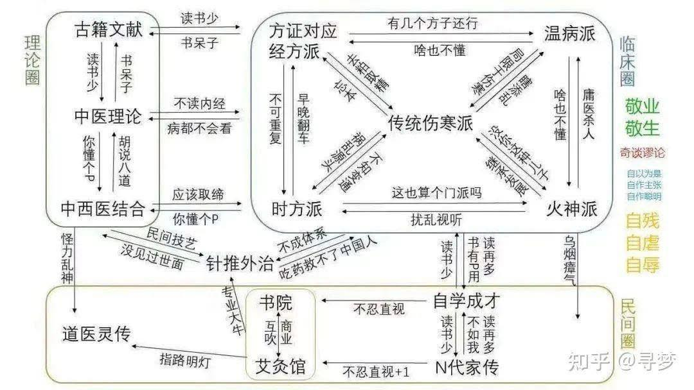

最近自己的同溫層裡在打趣的聊這張鄙視鏈😂
最近自己的同溫層裡在打趣的聊這張鄙視鏈😂
只能說貴圈真亂依舊內捲，不過我想每個行業都一定有這個情況，因為「人性」就是如此，自古以來就都是文人相輕，自詡我才是那個千百年來的武林奇才、我才是真正得道的唯一正宗真傳！老中青代代都是如此。
老子曰：道可道非常道。上段這些自以為是的意淫就大可不必了。
每一門技藝學問都有其邊界範圍，多看多學多增廣見聞，沒有人是唯一也沒有什麼非誰不可，都已經二十一世紀AI時代了，與其眼中只見他派的不足，不如多想想人家的優勢是什麼，然後想辦法理解吸收成為增長自己的養分吧！
